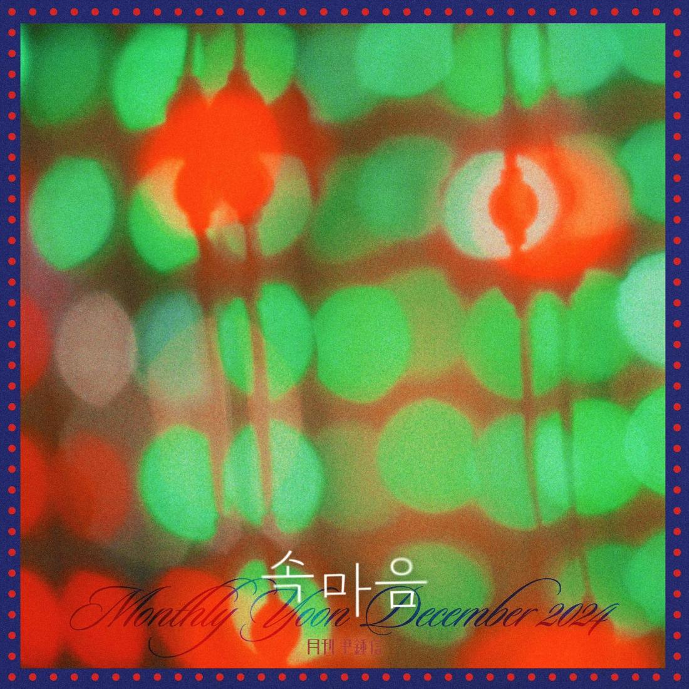

안녕하세요 라보엠입니다.
2024년 12월 27일 월간 윤종신 프로젝트의 12월호 속마음을 발매되었습니다. 이 신곡은 자기 이해를 위한 고민과 갈등의 시간을 예찬하는 의미 깊은 곡으로, 우리 내면을 들여다보는 시간의 중요성을 노래하고 있습니다.

월간 윤종신 12월호 - 속마음 MV
속마음은 타인에게 이해받고 싶어 하는 마음을 넘어, 자신의 내면을 깊이 들여다보는 과정의 중요성을 강조합니다. 윤종신은 이 곡을 통해 우리가 흔히 겪는 내적 갈등과 고민의 시간이 얼마나 가치 있는지를 표현하고 있습니다.
이 노래는 "입 밖으로 꺼내기 이전의 마음"과 "언어의 옷을 입기 전의 생각"을 향한 윤종신의 탐구적 시선을 담고 있습니다. 이는 우리가 말로 표현하기 전 느끼는 순수한 감정과 생각들에 대한 관심을 보여줍니다.
음악적 특징
속마음은 윤종신 특유의 감성적인 보컬과 정석원의 작곡이 어우러진 곡입니다. 노래의 멜로디는 듣는 이로 하여금 자신의 내면을 돌아보게 만드는 힘이 있습니다. 윤종신이 직접 작사한 가사는 그의 깊은 통찰력을 보여주며, 자기 자신과의 대화, 내면의 소리에 귀 기울이는 시간의 중요성을 섬세하게 표현하고 있습니다.
이번 노래는 우리 모두에게 필요한 자기 이해의 시간을 이야기하고있습니다. 윤종신은 이 곡을 통해 혼자 고민하고 갈등하는 시간도 충분히 가치 있다는 메시지를 전달하고 있는데요, 현대 사회에서 우리는 종종 즉각적인 반응과 소통을 요구받지만, 속마음은 그 이전에 자신과의 대화, 내면의 소리를 듣는 시간이 얼마나 중요한지를 생각하게 됩니다.
월간 윤종신 12월호 속마음 노래 가사
속마음은 말이야 속에 있을 때 좋은 것 같아
말을 통해 공기에 닿으면
금방 상해 버린 채로 다른 모두로 옮겨져
속마음은 말이지 가끔 말없이 알아주는
단 한 사람 만나기를 위해
그 속에 살아
몰라준 사람 이젠 원망하지 않아
알아주는 단 한 사람이 나타날 거니까
모두가 나를 이해할 순 없더라구
살아가다 결국 알게 된 오직 너란 걸 고마워
애가 탔던 속마음 그래도 꺼내지 않은 게
잘 한 거야 하마터면 그를
잃을 수도 있었던 설익은 내 설레임
결국 살아가는 건 나를 알아가는 긴 여행
이쯤에서 날 대충 알 것 같아
나의 크기를
몰라준 사람 이젠 원망하지 않아
알아주는 단 한 사람이 나타나 준다면
모두가 나를 이해할 순 없더라구
살아가다 결국 알게 된 오직 너란 걸 고마워
속마음이란 내 작은 섬
누가 발견해 주길 바란
너무 증명받고 싶었던 조바심의 날들은
가슴 속마음 그 진짜 나를 아껴줘
알아주는 그 단 한 사람 나 혼자일지라도
나만 아는 나 서로 말 자주 걸어줘
살아보면 결국 내 곁엔 오직 나만이 남는 걸
월간 윤종신 프로젝트
월간 윤종신은 윤종신이 매월 새로운 곡을 발표하는 프로젝트입니다. 이를 통해 그는 꾸준히 음악적 실험을 이어가며 리스너들에게 다양한 음악을 선보이고 있습니다. 2024년 한 해 동안 윤종신은 3월호 '음', 9월호 '후회왕' 등 각기 다른 메시지와 음악적 색채를 지닌 곡들을 발표했습니다.
윤종신은 월간 윤종신 프로젝트를 통해 다양한 장르와 주제의 음악을 선보이며 자신의 음악적 스펙트럼을 넓혀가고 있습니다. 1988년 데뷔 이후 그는 끊임없는 음악적 실험과 도전을 통해 성장해왔으며, 속마음은 그의 음악적 깊이와 성숙도를 잘 보여주는 작품이라고 할 수 있습니다.
맺음말
윤종신의 속마음은 우리에게 잠시 멈춰 서서 자신의 내면을 들여다보는 시간의 중요성을 일깨워줍니다. 이 곡은 윤종신의 음악적 성숙도와 깊이를 잘 보여주는 작품으로, 그의 섬세한 가사와 감성적인 멜로디는 듣는 이로 하여금 자연스럽게 자신의 내면을 돌아보게 만듭니다. 이번 노래는 때로는 천천히 가는 것도, 혼자 고민하는 시간을 갖는 것도 괜찮다는 것, 그리고 그 과정에서 우리는 자신을 더 깊이 이해하고 성장할 수 있다는 메시지를 전하고 있습니다. 윤종신의 이번 곡은 우리 모두에게 그런 소중한 시간을 선물해주는 의미 있는 작품이라고 할 수 있겠네요.
한 해를 마무리하며 우리 내면의 소리에도 귀기울여보는 시간을 갖는것도 좋을 것 같습니다.
남은 한 해도 잘 마무리 하시기 바랍니다.